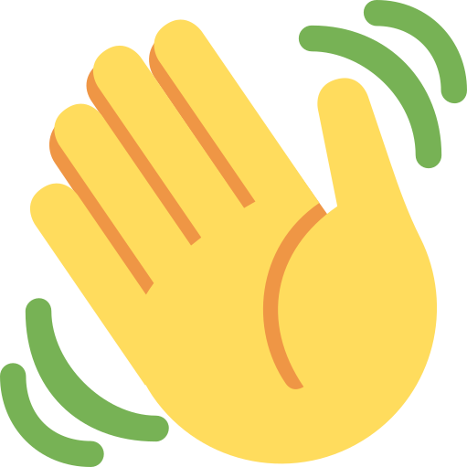
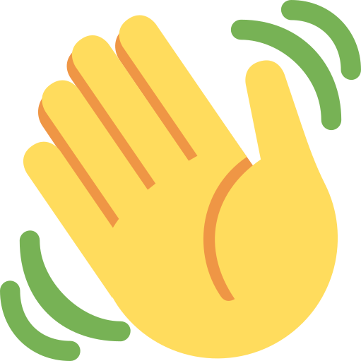

12:15Ottawa 17th Sep 2019
Căn đúng giờ tổng 9 để viết cho em nhé =)). Không thấy đòi thư gì chắc quên rồi ^^. Viết sớm chứ không 3h đêm nữa vì thư này không buồn mà. Em đang đọc là trên web, còn anh đang viết là trên sổ panda này. Sổ khủng long thì anh dùng làm sổ kiểm tiền rồi.
Đi 3 tuần mọi thứ dần ổn ổn quen hơn rồi nên hôm nay viết bù thư cho nhé, cho vào đúng ngày 18 luôn nữa. Hmm 18/8 người ta đã plan đi xem kịch rồi dạo đêm các kiểu rồi cơ, 18/9 này chỉ có thư thôi tiếc chưa ^^. Nhưng cho chọn giữa có 18/8 mà ko có 18/9, thì anh vẫn chọn có 18/9 này.
Anh không biết giờ viết gì nữa mà luyên thuyên cũng 1 trang sổ rồi đây. Web anh làm thư bé tí, tha hồ mà căng mắt đọc =)). Nhìn qua anh cũng kiểu hoạt bát sủa nhiều, nhưng quen hẳn chắc em cũng thấy anh là kiểu geek chính hiệu ý… Anh có thể quan tâm em hằng ngày nhưng không nghĩ được mấy quả pro tiệc bất ngờ hay gì như em với Phanh đâu…
>
Mà giờ kỉ niệm lần đầu + bù cho quà của em nên cũng muốn làm gì đặc biệt lại. Đúng như một thằng geek nên sẽ viết web tặng nhé. Web anh viết lòe em thôi, chứ người khác biết code thì đọc đc hết ko cần username gì đâu =))
Quả mờ bài dài chưa. Rồi, cũng “back in time” chút nhé. Hôm em nói dừng lại ở hồ anh hẫng lắm. Cũng không quá buồn, anh không cho mình được thế trước lúc đi. Nhưng cũng một phần vì anh nghĩ mình cũng sẽ còn gì đấy nữa, chứ sẽ không hết hẳn luôn đâu. Và đúng thế luôn. Cảm ơn em vì ngày cuối cùng tuyệt vời, chắc chắn là một trong những ngày đẹp nhất tuổi trẻ anh luôn!! Mấy hôm cuối đấy anh chẳng nghĩ gì, vì anh biết anh nghĩ cũng chả được gì đâu, cứ cố gạ gặp em nhiều nhất có thể rồi tận hưởng thôi. Mọi thứ vui vẻ bình thường, anh nghĩ em làm anh vui trước khi đi thôi. Cho đến hôm đi chơi sáng rồi em ôm anh dựa cằm vào vai ngủ. Anh biết em buồn ngủ thật =)) nhưng anh cũng biết nếu không có gì thì em cũng không thế đâu. Nên lúc đấy cũng hơi suy nghĩ về bọn mình. Cảm ơn cơn đau bụng hôm đấy ghê. Đến ngày cuối anh tư tưởng kiểu “enjoy every last moment” thôi chứ không nghĩ gì.
<
>
Thêm ngáo ngủ ít nữa nên bị em lừa 100% luôn. Lúc ở hồ ôm tạm biệt chỉ muốn ôm mãi, cũng sợ đi nhỡ là hết. Định cả hôn tạm biệt cơ nhưng cũng ngại với mình cũng đang không biết là gì của nhau =)). Xong đi về nghĩ “Ơ chả hiểu sao biết bác Lan gọi rồi mà vẫn bắt mình qua họp clb làm gì cùng nhỉ”. Nhưng cũng đi thôi, muốn cùng em càng lâu càng tốt mà. Đi vào thấy Phanh, thấy bánh, thấy bé Iron… Thề lúc đấy em còn nắm tay vào, ngáo người luôn. Em đưa túi quà vẫn không biết cơ, tưởng có Iron thôi còn dưới là sổ hồng gì với quần áo chắc tí đi với clb =))). Em bảo xem hết đi mới dám lôi ra, uầy túi không đáy à sao nhiều quà thế =)). Ở đáy túi là tập giấy gì dày cộm thế nhỉ? Hmm 1 cú “mãi làm bạn nhé” hay “mình quay lại nhé” đây =))). Đã ngáo mà đầu cứ phải nhảy số liên tục. Đọc hết tờ 1, cứ nhẩm “Xưng anh em đi, xưng anh em đi, xưng anh em đi”. Lật sang tờ 2 ôi đúng thật luôn. Xong đến đoạn cuối, “Nào quay lại đi, nào quay lại đi, nào quay lại đi”… Đến đấy không đủ bình tĩnh đọc rồi, skim scan như đọc Ielts tìm đoạn quay lại =))). Đọc xong cảm xúc đúng khó tả… Như mơ à, vì đúng cái mình muốn, và đang không tỉnh táo
<
>
nữa =)) Công nhận đỉnh thật sự, làm một thằng như anh mà về nhà lẩm nhẩm hát luôn mà. May đi sáng nên đọc xong vẫn được gặp thêm chút buổi tối nhé. Hmm lại muốn đứng ở tầng thượng mãi. Nhưng thôi, dẫn lên tầng thượng là hoàn hảo để tạm biệt rồi…
So với trước thì anh thấy lần này cả 2 đều có những thay đổi. Và anh nghĩ đấy đều là những thay đổi tốt. Như anh thì giảm kì vọng đi, bớt mơ mộng mà thực tế hơn, và trân trọng thời gian bên nhau hơn. Ở em anh cũng thấy có thay đổi nhiều, nhất là mấy hôm nay sau hôm anh say nói nói =)). Thật ra cái gì chưa quen hay không thích thì không cần cố đâu, chỉ cần thoải mái và ngoan lúc anh cần như đôi khi em vẫn ngoan là được rồi. Kiểu đợt anh ốm thì cũng chỉ cần tự giác anh em rồi chúc ngủ ngon rồi tính cảm tí tí là anh vui rồi mà. Anh thấy những thay đổi đấy đều là tốt vì cảm giác giờ mình giống một đôi hơn hồi trước.
Muốn nói nốt gì thì chắc anh chỉ muốn nhắc lại em có gì cũng nói anh nhé thôi. Chiều ngược lại anh luôn nói cho em mà. Anh luôn thế trong hầu hết mọi
<
>
vấn đề ý, nói chuyện và cùng giải quyết. Đừng kì với nhau mà nói không có gì chứ, em nói có gì mà em chưa muốn kể cũng đc mà. Kể cả chuyện bé, hay chuyện làm anh buồn thì cũng kể chứ đừng giữ xong nghĩ 1 mình… Thật sự anh có sợ nhỡ một ngày em lại có cảm giác không đúng hay gì đó, nhưng sợ hơn là em có mà không nói cho anh biết. Ngoan, anh luôn lắng nghe nhé!
Gọi suốt kể suốt nên em cũng biết anh vẫn ổn, rất ổn. Nhưng anh cũng nhớ em. Nhớ được đi hồ với em, được ngồi Nhà Hát Lớn ôm em, được dắt em đi lang thang café lạ lạ, được đón mùa rét cùng em, được hôn em thêm lần nữa. Nhưng thôi dễ dàng quá thì còn gì hay nhỉ ^^. Không hiểu chính xác vì sao anh luôn cảm giác mình còn nhiều ở phía trước, dù có on off như nào =)). Nên giờ mặc dù không nói trước gì nữa, nhưng anh luôn có cảm giác mình sẽ được làm đủ mấy cái trên thôi.
Dần ngủ sớm đi thôi nhé, đi suốt ngày mà ngày ngủ có 4 tiếng thì sức đâu ra…Sau còn bận hơn nên phải ngoan giữ gìn đi, có gì anh gửi thêm energy cho!
<
>
Thư hơi bị dài rồi nhé ^^ Giờ mới cho vào web chỉnh còn lâu đây. À còn ghép 1 chú vid nữa. Thật ra là anh ghép cho anh theo nhạc dở hơi anh nghe thôi =)) Tại ít đoạn quay được em nên cũng chưa nghĩ ra cách ghép cute =)). Mà thấy web ít quá nên cho xem vid nữa vậy, mong chưa bị gỡ vì bản quyền… À nhớ để 1080p vì nó mờ sẵn rồi...
TL ngoan nhé, yêu xa mà mình vẫn gần thôi!!
Yêu em,
Anh
*đoạn này trong sổ là có vẽ khủng long
<
>
Link cho em tải về đọc đỡ đau mắt nếu muốn nhé =))
Thư
Video
<
12:15Ottawa 17th Sep 2019
Căn đúng giờ tổng 9 để viết cho em nhé =)). Không thấy đòi thư gì chắc quên rồi ^^. Viết sớm chứ không 3h đêm nữa vì thư này không buồn mà. Em đang đọc là trên web, còn anh đang viết là trên sổ panda này. Sổ khủng long thì anh dùng làm sổ kiểm tiền rồi.
Đi 3 tuần mọi thứ dần ổn ổn quen hơn rồi nên hôm nay viết bù thư cho nhé, cho vào đúng ngày 18 luôn nữa. Hmm 18/8 người ta đã plan đi xem kịch rồi dạo đêm các kiểu rồi cơ, 18/9 này chỉ có thư thôi tiếc chưa ^^. Nhưng cho chọn giữa có 18/8 mà ko có 18/9, thì anh vẫn chọn có 18/9 này.
Anh không biết giờ viết gì nữa mà luyên thuyên cũng 1 trang sổ rồi đây. Web anh làm thư bé tí, tha hồ mà căng mắt đọc =)). Nhìn qua anh cũng kiểu hoạt bát sủa nhiều, nhưng quen hẳn chắc em cũng thấy anh là kiểu geek chính hiệu ý… Anh có thể quan tâm em hằng ngày nhưng không nghĩ được mấy quả pro tiệc bất ngờ hay gì như em với Phanh đâu…
>
 
